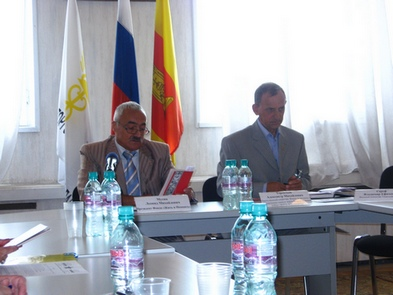

| В канун Дня памяти и скорби Фонд «Жить и Помнить» представил общественности региона новый издательский проект «КНИГА ПАМЯТИ. ГЛАВА ПЕРВАЯ».
 Фонд «Жить и Помнить» создан в 2006 году. По словам его руководителя Леонида Мусина, главная задача - увековечение памяти героев, пропавших без вести в годы Великой Отечественной войны. Дело в том, что спустя семьдесят лет после начала войны многие солдаты Великой Отечественной, погибшие в фашистском плену, попавшие под артиллерийский обстрел на полях сражений, до сих пор числятся пропавшими без вести. Неизвестны их судьбы, места захоронений. А записи о них в мартирологах обрывочны и часто приводят искаженные сведения. Фонд «Жить и Помнить» создан в 2006 году. По словам его руководителя Леонида Мусина, главная задача - увековечение памяти героев, пропавших без вести в годы Великой Отечественной войны. Дело в том, что спустя семьдесят лет после начала войны многие солдаты Великой Отечественной, погибшие в фашистском плену, попавшие под артиллерийский обстрел на полях сражений, до сих пор числятся пропавшими без вести. Неизвестны их судьбы, места захоронений. А записи о них в мартирологах обрывочны и часто приводят искаженные сведения.
Фондом подготовлена «КНИГА ПАМЯТИ солдат, считавшихся пропавшими без вести (Калининская область в ее довоенных границах: Тверская область, 12 р-нов Псковской и Холмский р-н Новгородской областей)». В нее вошли более 5 тысяч статей, каждая из которых посвящена судьбе отдельного человека. Статьи составлены на основании изучения документов архива Министерства обороны РФ, персональных карт военнопленных и других трофейных документов Вермахта, результатов работы поисковых отрядов.
Фонд принял решение начать поэтапную публикацию собранных материалов за счет собственных средств. 21 июня нынешнего года вышла в свет первая глава «КНИГИ ПАМЯТИ». Леонид Мусин убежден: «Крайне важно, чтобы эта простая книжечка как можно скорее оказалась в руках детей, внуков, родственников тех, чьи имена в ней напечатаны! Для них она будет дороже, чем большие фолианты с золотым тиснением».
В издание включена статья «Власть и пропавшие без вести» тверского историка Светланы Герасимовой. Пришедшие на презентацию представители ветеранских организаций, родственники погибших солдат выразили благодарность сотрудникам Фонда. Издание «КНИГИ ПАМЯТИ» они считают поистине народным делом, исполнением святого долга перед погибшими и их родственниками. «КНИГА ПАМЯТИ» проникнута духом патриотизма, уважения к человеческой жизни и прошлому страны.
|